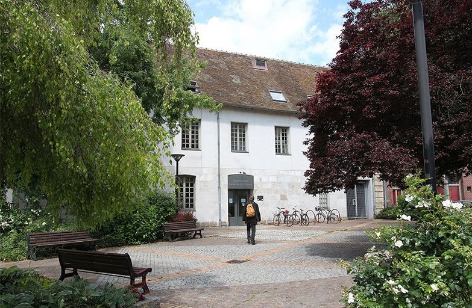

Tourisme et Loisirs du Beauvaisis
Maladrerie Saint Lazar
La maladrerie Saint-Lazare est un site remarquable des 12è et 13è siècles, typique de l’architecture
hospitalière du Moyen-Age. Le logis des religieux, la chapelle romane, la grange et sa charpente en chêne
d’origine, forment l’ensemble unique de ce qui constitue l’une des anciennes léproseries les mieux conservées en
Europe.
Elle est protégée au titre des monuments historiques.
Equipement culturel et touristique de la Communauté d’Agglomération du Beauvaisis, elle propose depuis 2009 une
programmation artistique variée, des visites guidées et des ateliers de médiation autour du patrimoine et du
jardin d’inspiration médiévale, des salons professionnels. Elle est également ouverte à la location pour les
entreprises et les particuliers. La Maladrerie Saint-Lazare est soutenue par la Région Hauts-de-France pour son
projet artistique et culturel et elle reçoit en 2018 le soutien de la mission Stéphane Bern et de la Fondation
du Patrimoine pour les travaux de restauration du logis.

L’École d’Art
du Beauvaisis
L’École d’Art du Beauvaisis est agréée organisme de formation professionnelle. À ce titre, des demandeurs
d’emploi, des enseignants en Congé Individuel de Formation ou des salariés peuvent s’intégrer dans les
formations existantes de l’École d’Art du Beauvaisis. Un itinéraire technique et pédagogique à la carte ainsi
qu’un emploi du temps individualisé sont proposés au stagiaire en formation.
Les spécialités :
→ céramique,
→ fil,
→ textile,
→ matériaux souples.
- On vous inscrit dès 4 ans et sans limite d’âge !
- Trois nouveaux enseignants en histoire de l’art, sculpture et céramique, qui, tout en préservant les approches
traditionnelles, apporteront un vent nouveau aux ateliers.
- Les ateliers pour adultes rajeunissent en accueillant en début de soirée les jeunes de 15 à 18 ans.
- L’offre s’étend pour les adultes sur toute la semaine et notamment sur les journées du jeudi et du
vendredi.
- De nouveaux cours sont mis en place pour mieux vous donner envie ou répondre à vos désirs : gravure et
photographie en journée, croquis au musée départemental à l’heure du déjeuner, céramique et tournage en matinée,
techniques mixtes le jeudi après-midi, expression plastique le jeudi soir.
AquaSpace
Tarifs :
- Plein tarif : 4,60€
- Tarif réduit : 3,60€
- Tarif -15 ans : 3,20€
- Carte 10 places : 36€
Horaires :
- Lundi : 12h00-13h40 / 16h30-19h45
- Mardi : 07h30-08h45 / 12h00-13h45 / 16h30-20h45
- Mercredi : 10h-19h
- Jeudi : 07h30-08h45 / 12h00-13h45 / 16h30-19h45
- Vendredi : 12h00-13h45 / 16h30-19h45
- Samedi : Bassin Sportif : 09h00-12h00
→ Bassin de Loisirs réservé aux Bébés nageurs : 09h00-12h00 / 14h00-19h00
- Dimanche : 09h00-18h00
→ Bassin de Loisirs réservé aux Bébés nageurs : 09h00-10h00

Concervatoire
du Beauvaisis
Equipement de la Communauté d’Agglomération du Beauvaisis, le Conservatoire Eustache-du-Caurroy est un
établissement d’enseignement artistique classé « conservatoire à rayonnement départemental » par le Ministère de
la Culture et de la Communication depuis 2008.
Il mène des missions d'initiation, de sensibilisation, de formation, de diffusion et de création à la musique et
à la danse.
Le Conservatoire développe de nombreux partenariats en direction des associations et des acteurs culturels de
l’agglomération (Maladrerie Saint-Lazare, Médiathèques du Beauvaisis, Ecole d’Art du Beauvaisis, ASCA, Chœur
Cantus Felix, Festival de violoncelle de Beauvais…)
